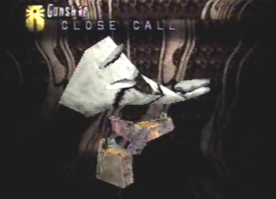
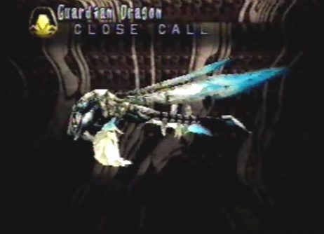

| Sub-Boss: Gunship  |
Strategy After Gash freed me, we quickly made our escape to the deck of the Gunship. My dragon was waiting for us outside. We quickly boarded the dragon and engaged the Gunship in battle. As we flew beside the ship, we noticed it was carrying some sort of Ancient Age monster. Our intent was to destroy it as well, before the Empire had a chance to fully resurrect it. As the battle began, the Gunship shot ion blasters at us. Moving to the front of the ship, lead us into a bombardment of Tracers. The dragon changed into its Spiritual form and unleashed its Wraith Slashers berserk attack. Soon after, something unexpected occurred. The Ancient Age monster came to life and began shooting upwards lasers! The Gunship was completely destroyed. Now we were up against an even greater threat! |
Divine Enemy Info
Normal/Attack Direction Tracers/Front and Back Special Ion Blasters/Left and Right |
Length 63.0 Ln Height 45.0 Ln Width 40.5 Ln Weight 14175 Kn Dynes 1 Dn Exp Pts 144 EXP Items Elixir Medis Macran Jewel |
Boss: Guardian Dragon  |
Strategy We now had to face a great evil from the distant past. Just being in the monsters presence, made me shutter with fear. The giant monster began the battle by shooting us with its powerful lasers. Soon after, it opened its tail plates. This action revealed its weak point, located directly behind the monster. Before we could move behind it, the monster uppercut us with its tail. This weakened the dragon greatly. I had to heal him with an Elixir Medis. After recovering, the dragon, while still in Spiritual form, immediately flew to the back of the monster and used its Wraith Slashers berserk attack. When this attack was completed, the monster closed its plates. We stayed behind it for a time, deciding what our next move would be. This wasn't such a good idea as the monster attacked us with a light particle blast. The dragon quickly moved to the front of the monster, to avoid any more devastating attacks. I then fired my gun at its head. This had a debilitating effect on the monster. It ceased functioning! We were able to move behind it once more and attack its tail area. Although, our attacks didn't take as much damage, since the monsters tail plates were closed. I also took this opportunity to heal the dragon. The monster soon restored itself and was back in the fight. While waiting for its tail plates to open again, I continued to shoot its head with my gun, eventually forcing it to cease functioning once more. As the battle ensued it finally opened its tail plates. The dragon, while behind the monster, continually fired Wraith Slashers at the monsters tail area. After taking so much damage, the monster went berserk. It spun out of control, constantly shooting lasers at us! The dragon finished it off with one more Wraith Slashers berserk attack and the great evil from the past, was put in its grave once more. What a horrible monster! |
Divine Enemy Info
Normal/Attack Direction Laser/Front, Left and Right Special Light Particle Charged/Back Tail Uppercut/Front Berserk Laser/ALL |
Length 108.0 Ln Height 40.5 Ln Width 36.0 Ln Weight 34560 Kn Dynes 700 Dn Exp Pts 576 EXP Items Elixir Medis Macran Jewel |